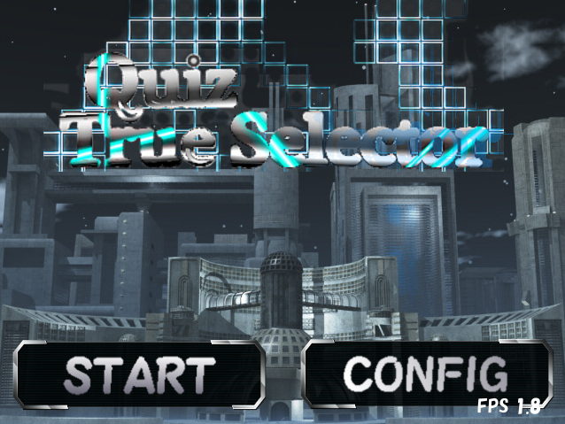
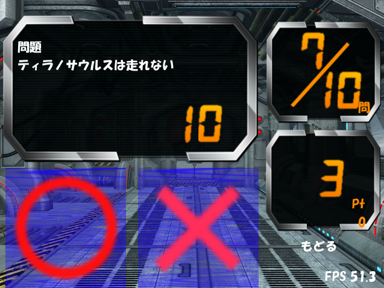
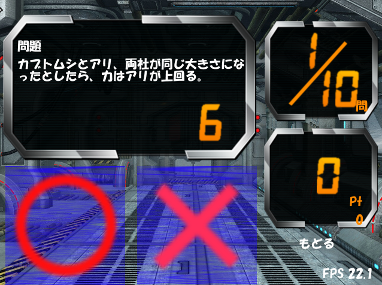
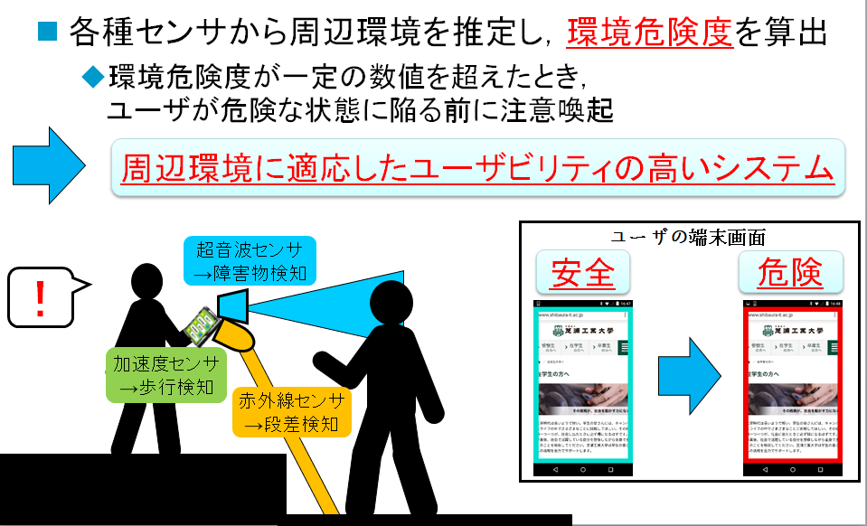
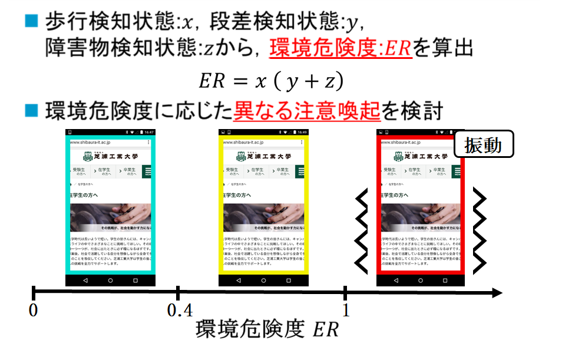
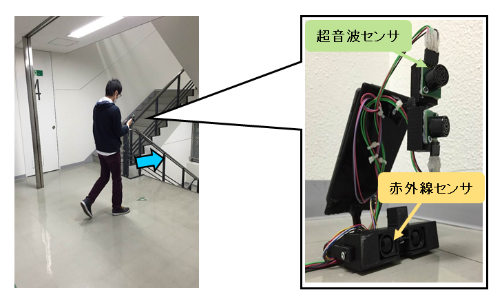
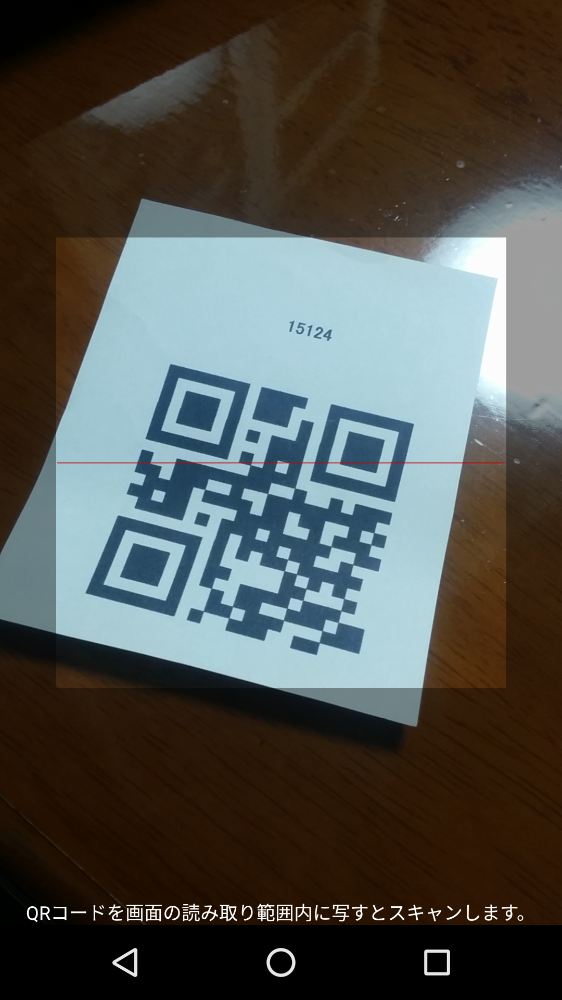
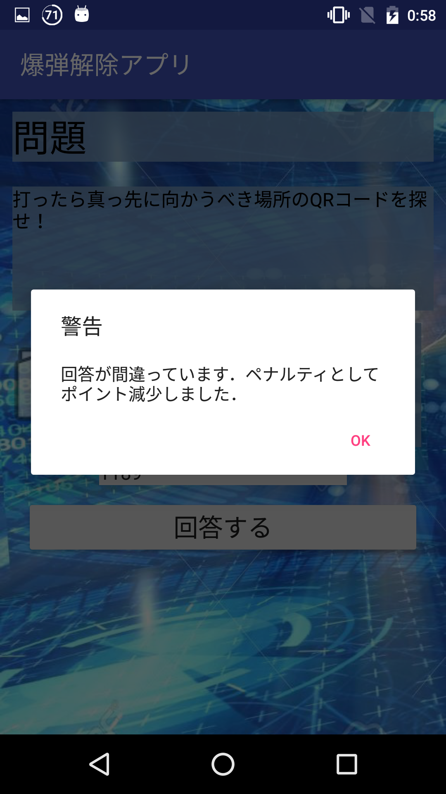
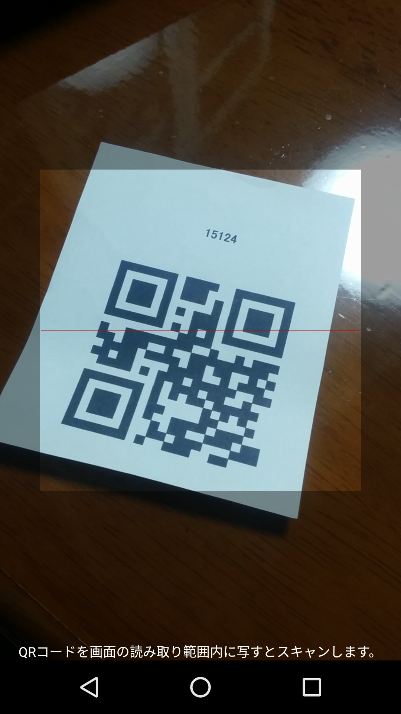
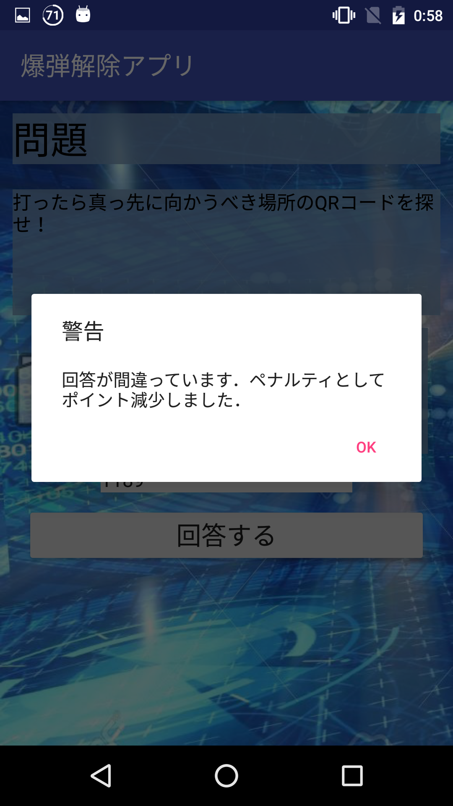

MyProfile
社会人３年目のエンジニアです。
お仕事では金融大規模システムの運用・追加開発。
趣味ではAndroidアプリ開発を中心に日々勉強しています♪
現在、エンジニアとしてキャリアを歩むため転職活動中です！
Contact
Like
Java
Android
arduino
Ruby
C
C++
Ruby on Rails
WebAuthn
Oauth2.0
Unity
SF Movie
Car Driving
Electric Guitar
Wifi-RTT
Personality
金融システムという高い品質が求められる現場での経験
新しい技術への高いアンテナ感度
必要なものは何でも手を出す・必ずやり遂げるの精神
銀行システムを担うエンジニアとして、何事にも高い品質を求められる現場での開発を経験してきました。 様々な場面を考慮したシステム設計や、詳細なテストケース抽出、後進へのノウハウドキュメンテーションに至るまで、 要件・規約に沿った高い品質でのプロダクトをご提供できます。
エンジニアとして学生時代から新しい技術のリサーチは毎日欠かさず行っています。
様々な分野に対してアンテナを広げているため、プロトコル・インフラ・アプリ・マイコンセンサといった様々な観点から
プロダクトを検討することができます。
また、Androidの新機能等、個人で試すことができるものは実装まで行って理解しているため、
プロトタイプの実装・デモがスピーディに行えます。
これまで、プロダクトの完成に必要であれば何でも手を出し、やり遂げてきました。
例えば、実験機器を3Dプリンタで印刷するためモデリングを行ったり、ゲームのBGMが必要であればDTMソフトで曲を作ったりと、
PCを介すものであれば分野問わずやり遂げてきました。
結果として、今まで自身が着手したプロダクトで完成しなかったものはありません。
この「必要なものは何でも手を出す・必ずやり遂げるの精神」を常に心がけています。
Skills
IT knowledge
大学でシステム工学を学び、電子情報通信学会に卒業論文を寄稿しました。
また、基本情報技術者および応用情報技術者を取得しており、IT技術の基礎を押さえています。
Android & Java
ハイブリットアプリから物理センサ連動アプリまで、幅広いAndroidアプリの開発ができます。
WebSystem & Java
インターネットバンキングシステム開発で培った、高品質なWebシステム開発・運用ノウハウを備えています。
Product
Overview
今まで開発してきたアプリ等はこちらにまとめております。
ソースコードやアプリ本体はGitHub上に置いてありますので、各GitHubアイコンから参照できます。
DXライブラリを用いたクイズゲーム
  
言語：C++ (DXライブラリを使用)
開発期間：２ヶ月 (実働時間９日)
まだプログラミングを知って間もない私が、大学１年のころに初めて作り上げたゲームです。
単純なマルバツゲームですが、アーキテクチャーも理解していない当時は各処理の判定や画像描画タイミング等を
実装するのにかなり苦労しました。
ソースコードも汚く、メンテナンス性も皆無ですが、初めて作り上げたプロダクト故、未だに愛着のあるゲームです。
歩きスマホ防止Androidアプリ
  
言語：Java, arduino
開発期間： ３ヶ月
大学の卒業研究にて開発したAndroidアプリです。
arduinoに集約させた各センサによって周囲に障害物がないかを判定しています。
さらにインカメラを用いてスマホ使用者本人が画面にどれほど没入しているかも判定しています。
この２つの要素から歩きスマホしている環境の危険度を測定し、一定以上の危険度に達したとき、歩きスマホをやめるよう促します。
脱出ゲーム風Androidクイズアプリ
 



言語：Java
開発期間： １ヶ月
脱出ゲームの面白さにハマり、会社のレク用として開発したゲームです。
参加者には会場内に隠してあるQRコードを画面上のヒントを基に探します。示された正しいQRコードを読み取った結果、さらにクイズが出現するので回答します。
これを何問か繰り返すというゲームになっております。